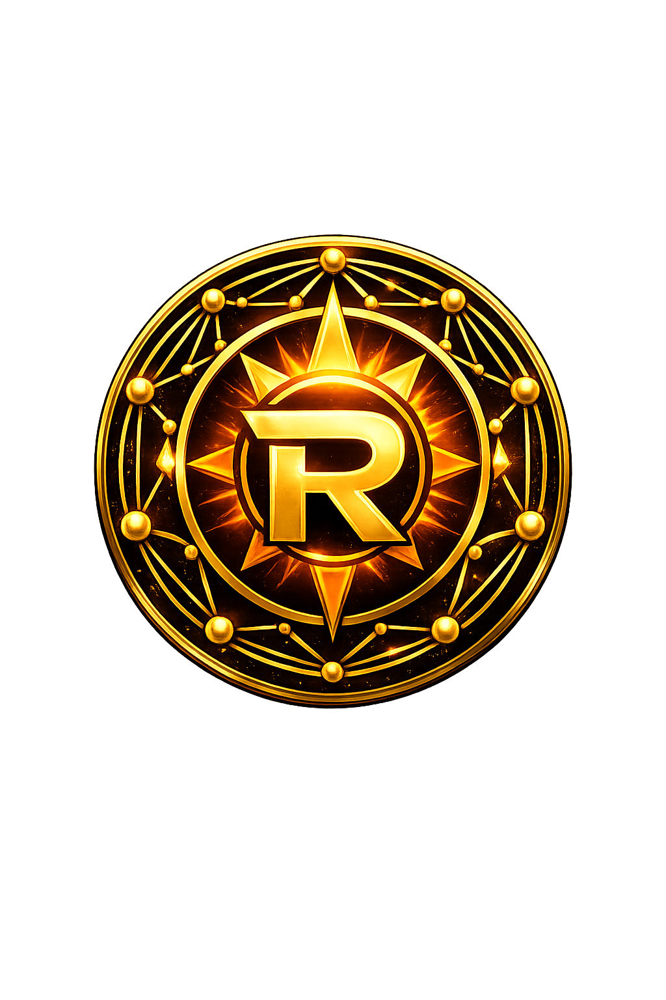

RAR CHAIN is a decentralized AI economic infrastructure designed for scarcity, AI-native payments, and a long-term path toward quantum-resistant security. The project launches through a Cosmos-aligned path before evolving toward its own dedicated network.

RAR combines scarcity-oriented token design, AI-focused payment architecture, decentralized community vision, and a long-term roadmap toward quantum-resistant infrastructure.
RAR CHAIN is designed around a long-term roadmap toward post-quantum security, with future migration paths for Dilithium, Falcon, and SPHINCS+.
RAR is built for a world where AI agents, autonomous services, and IoT devices need fast, programmable, low-cost payments.
RAR begins with a practical Cosmos-aligned path, allowing the project to grow step by step before eventually expanding toward its own dedicated network.
A long-term settlement layer focused on validator coordination, scarcity, decentralization, and future quantum-resistant security.
A payment layer designed for high-speed transfers, AI commerce, micro-payments, and machine-to-machine value exchange.
An intelligence layer intended for route optimization, fraud detection, fee efficiency, and adaptive economic interactions.
Project identity, official website, GitHub structure, whitepaper draft, and early community formation.
Payment-layer design, tokenomics refinement, validator model planning, and AI-native payment experiments.
Expansion toward a dedicated network, deeper decentralization, and long-term migration to quantum-resistant architecture.
RAR uses a scarcity-focused model designed for long-term value circulation. Transaction fees are split between burn mechanics and validator incentives, supporting both supply pressure and network participation.
17,000,000 RAR
Hard-capped for long-term scarcity.
100,000 RAR
Minimal early circulation designed to align growth with actual network use.
50% Burn / 50% Validator Reward
Designed to balance scarcity and validator sustainability.
RAR CHAIN is not designed as a meme token. It is a long-term protocol concept for decentralized AI economies, secure payment routing, and future-ready cryptographic resilience.